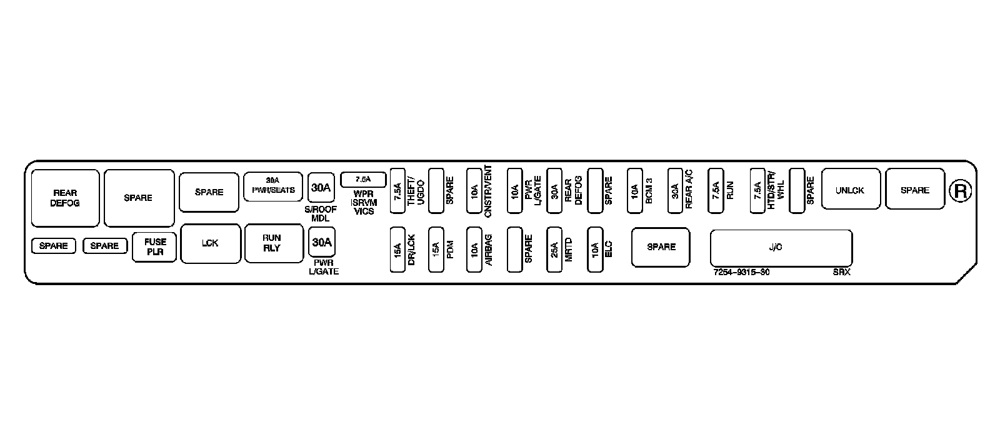
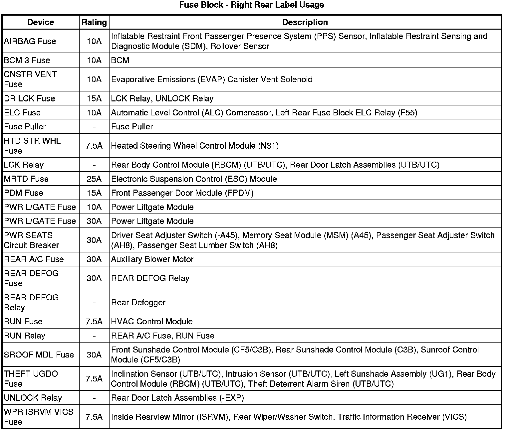
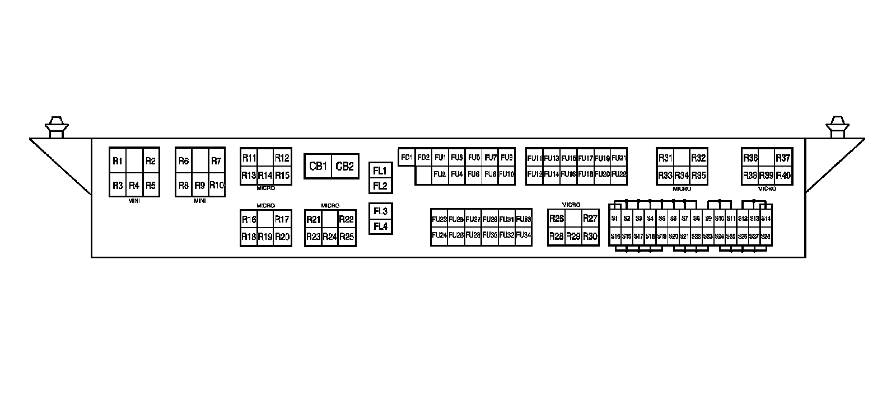
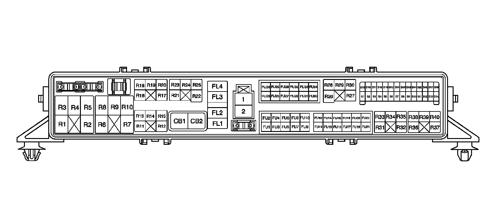
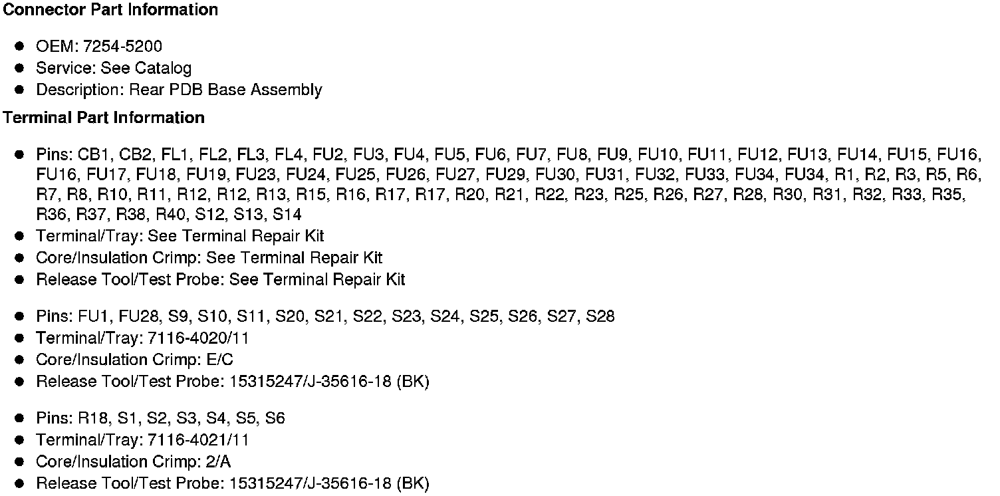
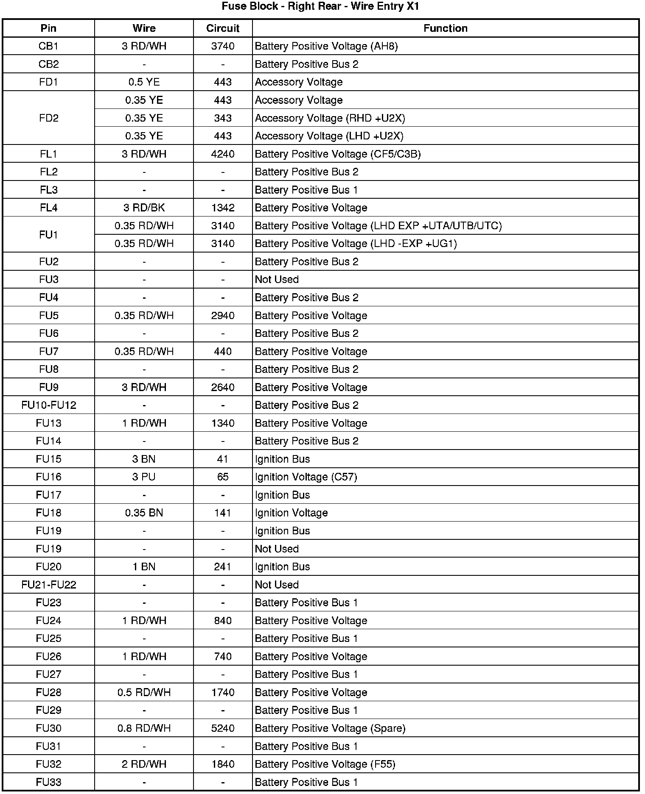
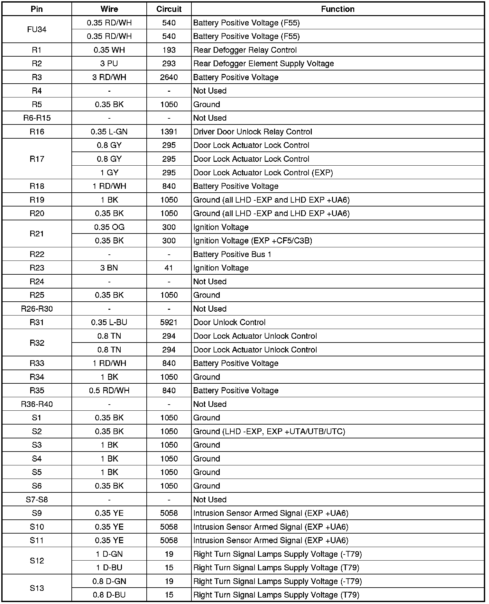
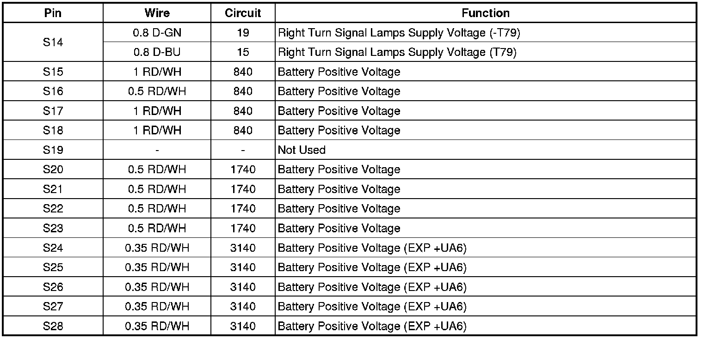
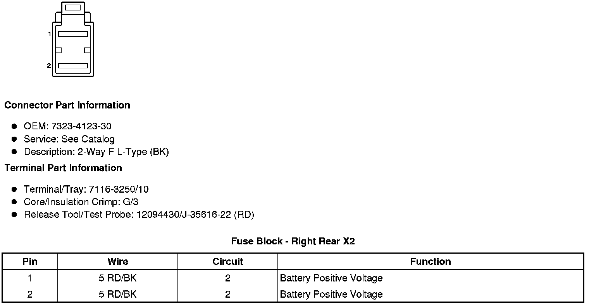

Operation CHARM
: Car repair manuals for everyone.
Home
>>
Cadillac
>>
2008
>>
SRX AWD V8-4.6L
>>
Repair and Diagnosis
>>
Starting and Charging
>>
Power and Ground Distribution
>>
Fuse
>>
Application and ID
>>
Fuse Block - Right Rear
Fuse Block - Right Rear
Electrical Center Identification Views
Fuse Block
- Right Rear Label


Fuse Block
- Right Rear Top View

Fuse Block
- Right Rear - Wire Entry X1





Fuse Block
- Right Rear X2
